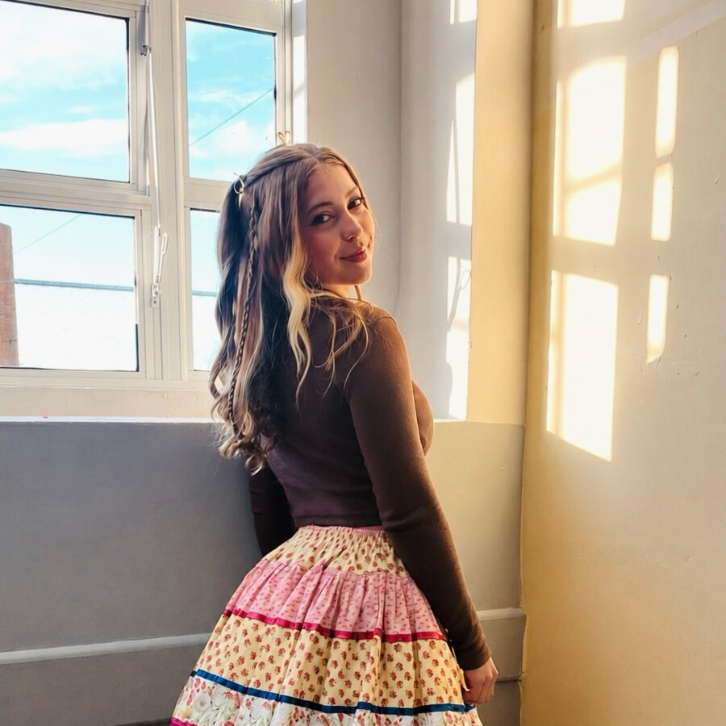

Curto prazo
Concluir o curso técnico
Terminar o 2º ano com os projetos em dia, seguir para o 3º e entregar um trabalho final do qual eu tenha orgulho.
Sobre mim
Tenho 16 anos, estudo na Escola Estadual Professor Júlio Szymanski e descobri na programação uma forma de dar vida às ideias. Aqui conto de onde vim, o que já aprendi e para onde quero ir.

Quem sou eu
Meu nome é Thayla Amaral. Entrei no curso técnico em Desenvolvimento de Sistemas sem saber exatamente o que ia encontrar — e acabei gostando de ver as coisas funcionando depois de escrever algumas linhas de código.
Hoje estou no 2º ano e consigo montar páginas completas com HTML e CSS, além de dar os primeiros passos em JavaScript. Sei que ainda tenho muito a aprender, e é justamente isso que me mantém interessada: cada projeto termina com alguma coisa nova que eu não sabia fazer antes.
Meu maior objetivo é cursar Fisioterapia. A tecnologia, para mim, não é um caminho separado disso: é a ferramenta que me ajuda a estudar melhor, organizar ideias e, quem sabe, criar soluções que aproximem saúde e cuidado.
Linha do tempo
Um resumo do que cada etapa do curso trouxe para o meu repertório — do primeiro arquivo HTML ao jogo que hoje está publicado neste site.
Em resumo
Cada trimestre acrescentou uma camada: primeiro a estrutura, depois o visual, agora a interação. O próximo passo é aprofundar JavaScript e continuar publicando projetos.
Primeiras aulas de informática, contato com editores de código e a descoberta de que uma página na internet é feita de arquivos que eu mesma posso escrever.
Estrutura de páginas, títulos, listas, imagens e links. Depois, cores, tipografia e espaçamento — até as páginas começarem a ter identidade.
Grid, flexbox e media queries para o site funcionar no celular. Também aprendi a importância de código limpo, nomes claros e acessibilidade.
Lógica, eventos e manipulação do DOM. O resultado está nas páginas que você está navegando: um Tetris funcional e este portfólio, ambos feitos do zero.
Autoavaliação
Uma leitura honesta do meu momento: o que já domino, o que estou praticando e o que ainda está no começo.
Jeito de trabalhar
Prefiro entender o porquê de cada linha a copiar uma solução pronta.
Pequenos avanços toda semana valem mais do que um esforço enorme que não se repete.
Trocar ideia com colegas e professores é a forma mais rápida de aprender — e a mais divertida.
Além da tela
Sou palmeirense de coração. O time aparece nas canecas da cozinha, nas conversas de domingo e, claro, nas cores deste site — que misturam o verde da camisa com o rosa que sempre esteve presente nos meus projetos.
Gosto do que o futebol ensina: jogar em equipe, insistir até o fim e comemorar cada conquista. Levo isso para os estudos também.

Planos
Metas claras ajudam a manter o foco — estas são as minhas, do próximo semestre aos próximos anos.
Curto prazo
Terminar o 2º ano com os projetos em dia, seguir para o 3º e entregar um trabalho final do qual eu tenha orgulho.
Médio prazo
Meu objetivo principal. Quero me preparar com dedicação para o vestibular e começar a graduação com uma base de estudo sólida.
Longo prazo
Usar o que aprendi programando para criar soluções simples que ajudem pacientes e profissionais da saúde no dia a dia.
Próximo passo
Se você tem uma sugestão de projeto, uma dica de estudo ou só quer dizer olá, minha caixa de mensagens está aberta.